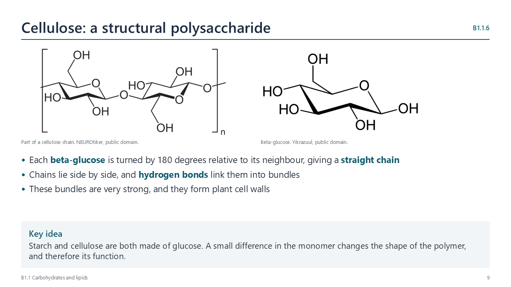
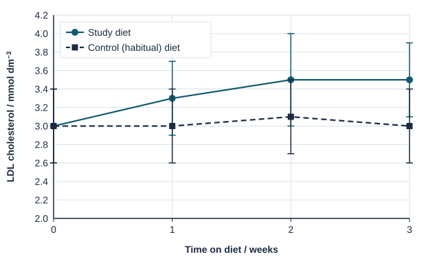

Written for this site from the class slides. The chapter is on pages 181–204 of the course textbook. Image credits are on slide 20.
Carbon and polymers
B1.1.1
Why carbon is the basis of life
pp. 181–204
A covalent bond is a strong bond formed by sharing electrons. A carbon atom can form up to four single bonds, or a mix of single and double bonds, with carbon or other non-metals. So it can form unbranched and branched chains, and single or multiple rings.
B1.1.2
Condensation
pp. 181–204
Condensation links monomers into a polymer, releasing a water molecule for each link. Examples are polysaccharides, polypeptides and nucleic acids.
B1.1.3
Hydrolysis
pp. 181–204
Hydrolysis digests polymers into monomers. Water is split, and it supplies the -H and -OH groups. This happens in digestion, and in the surroundings of decomposers.
Carbohydrates
B1.1.4
Monosaccharides
pp. 181–204
In ring form, pentoses have 5 carbons, and hexoses have 6. Glucose is soluble and transportable, it is chemically stable, and it yields energy when oxidized in respiration.
B1.1.5
Starch and glycogen
pp. 181–204
Starch in plants and glycogen in animals are compact, because they coil and branch. They are relatively insoluble, because of their size, so they have little osmotic effect. Alpha-glucose monomers are easily added or removed, to build or mobilize a store.
B1.1.6
Cellulose
pp. 181–204
Beta-glucose monomers alternate in orientation, which gives straight chains. Chains are grouped in bundles and cross-linked by hydrogen bonds, which gives high strength for plant cell walls.

B1.1.7
Glycoproteins
pp. 181–204
A glycoprotein is a protein with a carbohydrate chain, which faces out from the membrane. Other cells can recognize it. ABO antigens on red blood cells differ by the sugars at the ends of their chains.
Lipids
B1.1.8
Lipids are hydrophobic
pp. 181–204
Lipids dissolve in non-polar solvents, and are only sparingly soluble in water. They include fats, oils, waxes and steroids.
B1.1.9
Forming triglycerides and phospholipids
pp. 181–204
By condensation, one glycerol links to three fatty acids in a triglyceride, or to two fatty acids and a phosphate group in a phospholipid.
B1.1.10
Saturated and unsaturated fatty acids
pp. 181–204
Type
C=C bonds
Melting point
Saturated
None
Highest: chains pack closely
Mono-unsaturated
One
Lower: a kink in the chain
Poly-unsaturated
Two or more
Lowest: more kinks
Plants store energy in oils, and endotherms store it in fats, which suits their warm bodies.
B1.1.11
Triglycerides in adipose tissue
pp. 181–204
Triglycerides suit long-term energy storage: they are insoluble and store about twice as much energy per gram as carbohydrate, though they mobilize slowly. They are also thermal insulators, especially as blubber in endotherms in cold water.
B1.1.12
Phospholipid bilayers
pp. 181–204
A phospholipid is amphipathic: it has a hydrophilic phosphate head and two hydrophobic tails. In water, heads face out and tails face in, so a bilayer forms.
B1.1.13
Steroids pass through the bilayer
pp. 181–204
Steroids, such as oestradiol and testosterone, have four fused rings. They are non-polar, so they can pass through the hydrophobic core of a membrane.
Videos
Select a video to play it here. Select it again to close it.
Print this guide and complete it as you work through the slides and videos. It asks for your own explanations, so close the notes while you try each section.
A printable worksheet covering the chapter, from quick recall to data questions and a longer answer. It has 48 marks and takes about 50 minutes, or you can do one section at a time.
Questions built on realistic experimental data, in the style of Paper 1B and Paper 2. Work them on paper and show your working. 8 marks in total. Your teacher has the mark scheme.
Saturated fat and blood cholesterol
8 marks
Photo: BorisTM, Public domain, Wikimedia Commons.
Thirty healthy adults were split into two groups. For three weeks, the study group ate a diet in which olive oil and nuts were replaced with butter and cream. The control group kept their usual (habitual) diet. The table shows the mean daily intake. The graph shows mean blood LDL cholesterol, ± 1 SD.
Habitual diet
Study diet
Energy / MJ day−1
9.4 ± 1.8
9.2 ± 1.1
Total fat / % of energy
34
34
Saturated fat / % of energy
11
18
Monounsaturated fat / % of energy
15
10
Polyunsaturated fat / % of energy
8
6
Carbohydrate / % of energy
48
47

Comment on the energy content of the two diets. [1]
Distinguish between the fat content of the two diets. [2]
Calculate the percentage change in mean LDL cholesterol of the study group from week 0 to week 3. [2]
High LDL cholesterol is a risk factor for coronary heart disease. Evaluate the claim that these data show saturated fat causes heart disease. [3]
Practical
Testing foods for carbohydrates and lipids
Lab50 minB1.1.4, B1.1.5, B1.1.8
You will need: Food samples, iodine solution, Benedict's solution, water bath, ethanol, test tubes
Test each sample for starch with iodine
Heat each with Benedict's solution in a water bath to test for reducing sugars
Shake each with ethanol, then add water, to test for lipids
Record the results and relate them to each molecule's structure
Safety: Eye protection. Ethanol is flammable, so no naked flames. Do not taste foods in the lab.
Carry this out with your teacher's supervision and follow your school's lab rules.
Nature of science and TOK
Nature of science
Evidence
Advice about saturated fats has shifted as studies improved, partly because diet is hard to measure and to control.
Theory of knowledge
How should we act when evidence is uncertain?
Public advice must be given before science is settled. Consider how confidence should be communicated when evidence may change.
Syllabus statements
Summarised in our own words. Use each code to find the exact wording in your textbook or the IB subject guide.
B1.1.1Why the chemistry of carbon allows the diverse compounds that life is built onp. 181
B1.1.2How condensation reactions join monomers into polymersp. 187
B1.1.3How hydrolysis breaks polymers down into monomers during digestionp. 187
B1.1.4The structure and uses of monosaccharidesp. 189
B1.1.5Polysaccharides used to store energyp. 191
B1.1.6How the structure of cellulose suits its role supporting plantsp. 193
B1.1.7How glycoproteins allow cells to recognise one anotherp. 195
B1.1.8Why lipids are hydrophobicp. 197
B1.1.9How condensation forms triglycerides and phospholipidsp. 198
B1.1.10How saturated, monounsaturated and polyunsaturated fatty acids differp. 199
B1.1.11How triglycerides in adipose tissue store energy and insulate the bodyp. 201
B1.1.12Why the hydrophilic and hydrophobic parts of phospholipids make them form bilayersp. 202
B1.1.13How non-polar steroids can cross the phospholipid bilayerp. 204
HL extension
B1.1 has no HL-only content. SL and HL students learn the same material here.